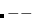

Here are two quickies which introduce some different and exotic looking expressions. First:
7679 schar()
{
return *u.u_dirp++ & 0377);
}
where the declaration
char *u_dirp;
is part of the declaration of the structure “u”.
“u.u_dirp” is a character pointer. Therefore the value of “*u.u_dirp++” is a character. (Incrementation of the pointer occurs as a side effect.)
When a character is loaded into a sixteen bit register, sign extension may occur. By “and”ing the word with 0377 any extraneous high order bits are eliminated. Thus the result returned is simply a character.
Note that any integer which begins with a zero (e.g. 0377) is interpreted as an octal integer.
The second example is:
1771 nseg(n)
{
return ((n+127)>>7);
}
The value returned is n divided by 128 and rounded up to the next highest “integer”.
Note the use of the right shift operator “” in preference to the division operator “/”.